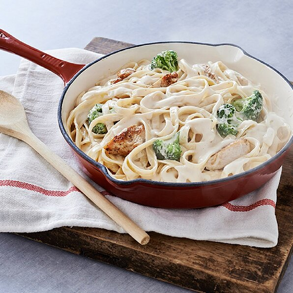

Chicken & Broccoli Alfredo with Fettucine

Description
This chicken and broccoli dish with Alfredo sauce and fettuccine pasta is ready in less than 30 minutes--perfect for
busy weeknight dinners.
Nothing spells comfort like Italian food. Steaming bowls of pasta, buttery, roasted garlic bread, and tureens of the
most flavorful sauces: it’s all right there. Sometimes, you want to bring that comfort into your very own kitchen and,
well, we’ve got just the recipe for you. This easy chicken alfredo penne will have you saying ‘mangia!’ before you even
know it.
Ingredients
- 1 tablespoon butter
- 1 ½ pounds skinless, boneless chicken breast halves
- 1 (16 ounce) jar RAGÚ® Classic Alfredo Sauce
- 1 (12 ounce) package frozen broccoli florets, thawed
- 1 (12 ounce) package fettuccine pasta, cooked according to package directions
Steps
- Melt butter in large nonstick skillet over medium-high heat and cook chicken, in batches if necessary, stirring
occasionally, until chicken is thoroughly cooked. Remove chicken and set aside.
- Stir sauce and broccoli into same skillet. Bring to a boil over medium-high heat. Reduce heat to low and simmer covered,
stirring occasionally, until broccoli is heated through, about 5 minutes. Stir in chicken and cook, stirring
occasionally, until heated through, about 2 minutes. Serve over hot fettuccine and sprinkle, if desired, with grated
Parmesan cheese.